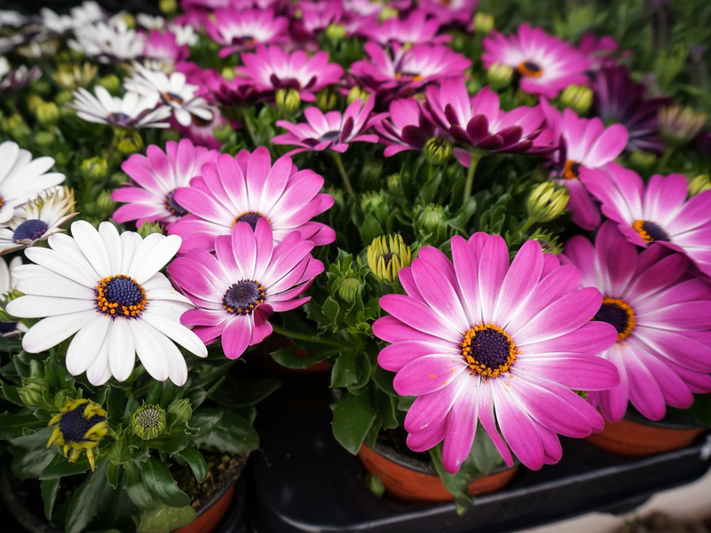

Roses are red and violets are blue. Roses are a symbol of love.

Daisy is also a nickname for Margaret, used because Marguerite, the French version of that name, is also a French name for the oxeye daisy.

White calla lily flowers are commonly used in Easter services and have come to represent resurrection and rebirth.

Sunflowers symbolize adoration, loyalty and longevity.